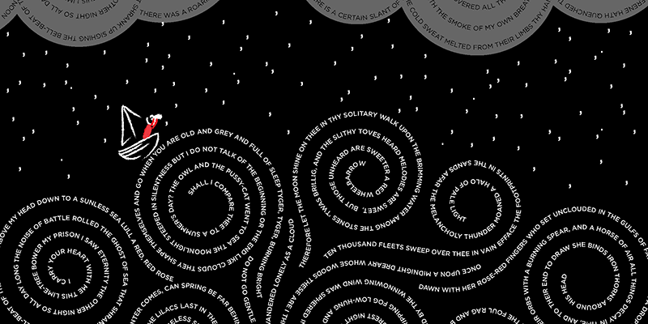

My Poems: By Tyler
Won't You Celebrate With Me: By Lucille Clifton
Won't you celebrate with me what i have shaped into a kind of life? i had no model. born in babylon both nonwhite and woman what did i see to be except myself? i made it up here on this bridge between starshine and clay, my one hand holding tight my other hand; come celebrate with me that everyday something has tried to kill me and has failed.
Winter Morning: By James Crews
When I can no longer say thank you for this new day and the waking into it, for the cold scrape of the kitchen chair and the ticking of the space heater glowing orange as it warms the floor near my feet, I know it’s because I’ve been fooled again by the selfish, unruly man who lives in me and believes he deserves only safety and comfort. But if I pause as I do now, and watch the streetlights outside flashing off one by one like old men blinking their cloudy eyes, if I listen to my tired neighbors slamming car doors hard against the morning and see the steaming coffee in their mugs kissing chapped lips as they sip and exhale each of their worries white into the icy air around their faces—then I can remember this one life is a gift each of us was handed and told to open: Untie the bow and tear off the paper, look inside and be grateful for whatever you find even if it is only the scent of a tangerine that lingers on the fingers long after you’ve finished peeling it.
Danielle's Dad: By Rachel Long
Has magical pockets. People come from all over the estate. They pay and hurry away. We watch from our bedroom window, through bunkbed bars, we pretend we're in prison. We ask Danielle, What sort of magic? She says, Dunno. Danielle is not very clever. She thinks the Woolwich Ferry is the Titanic. Look! She said as we drove around the roundabout, The Titanic! Even Mum pretended not to laugh. When Danielle is playing over, we can only play cheat-Scrabble as she isn't very good at spellings or maths either. We just write our names then add our letters together. Out of Rachel, Maria and Danielle, I am the winner. Sometimes, Danielle's dad reaches into his pocket and yanks out a black Lab puppy called Bo. Or a quadbike for JJ. Or lacy pink curtains for their screaming mum. But most often Danielle's dad yanks out fistfuls of coins . The most coins I've ever seen in a real-life hand . When we're playing out with Danielle, he'll say, Oi, ghels, go get some iscream or sumfink. We cheer, we shout, Thank you, Danielle's dad! He doesn't even count it, just pours the thick gold into our cupped hands till they bubble over. We skip towards the ice cream man. When we pay, we remember to cover our boobs with our other hand. We don't take a lick till we're back behind the garages. As he kisses my earlobe before bed, I tell Dad, Danielle's dad is richer than you. Hmm, I bet he is, Dad says.
Garden: By Isabel Duarte-Grey
To be pretty for you I have dropped two seeds of turnsole in the dark of both eyes. I grafted apple to the quickest vein in either wrist. I dug a ounce of poppyseeds where teeth should be, plugged my ears with golden balls of iris. I carved a hole in either breast to swaddle dahlias overwinter, like you, so frightened of the cold. My mouth grows hot with purring, with the tunneling of bees. My tongue, become a catacomb the wings will fill with scent. My skull, for you, ceramic bowl of flowers you may hurl against the wall. I am ready. Lead the way.